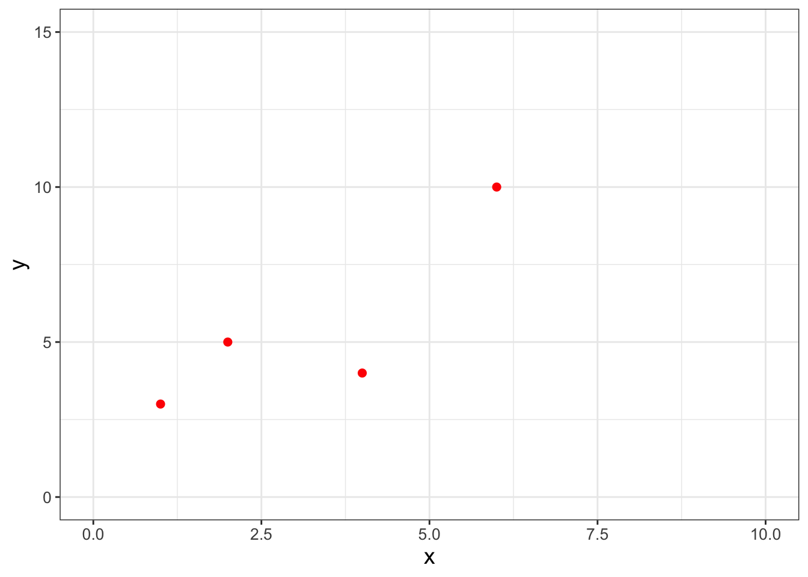
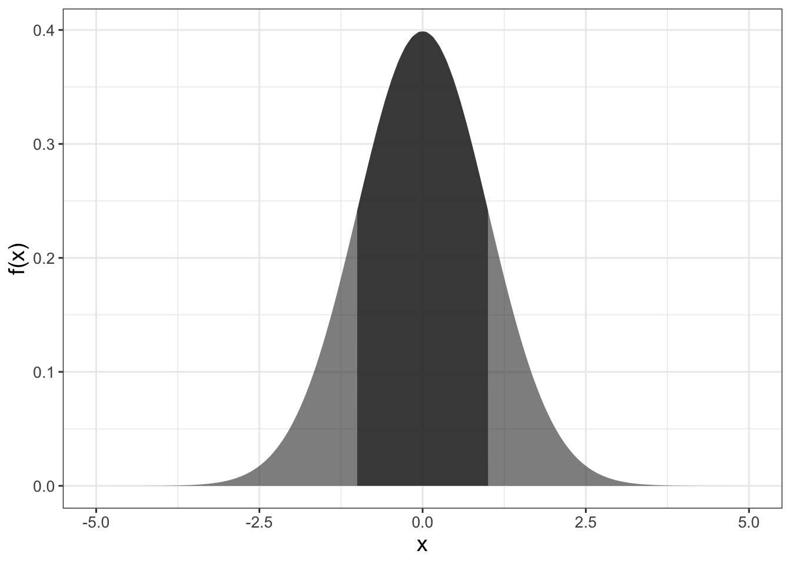
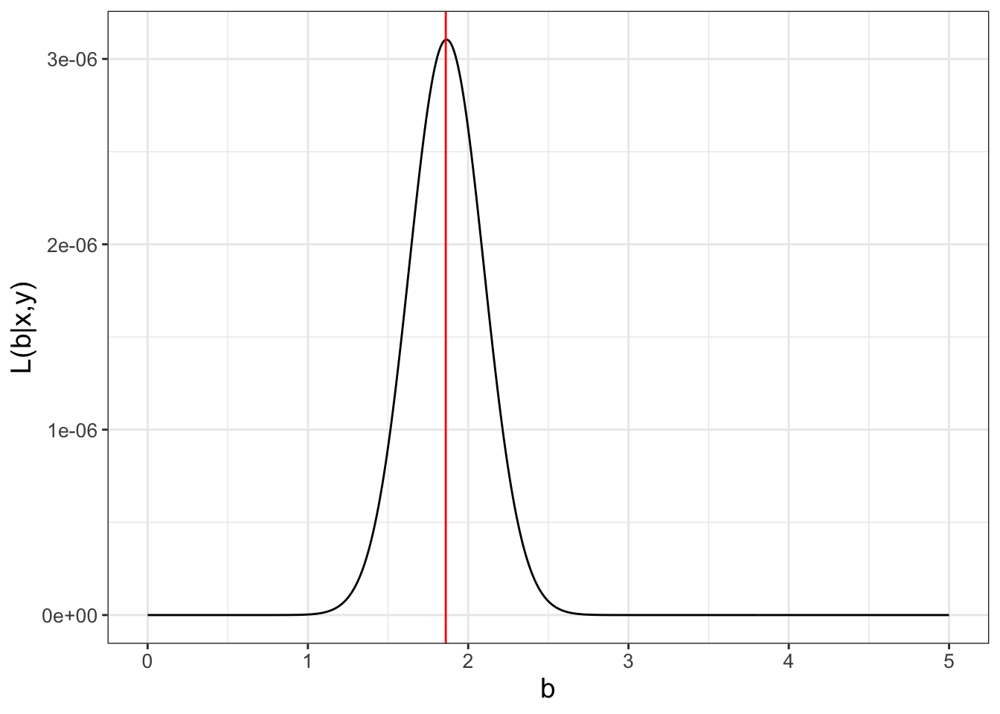
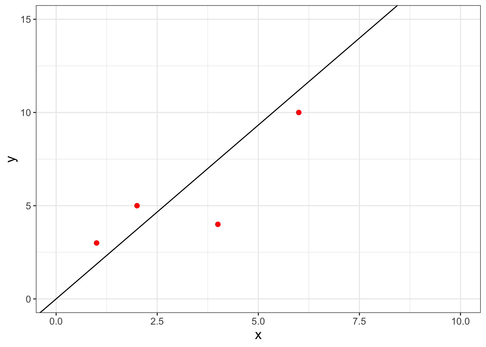
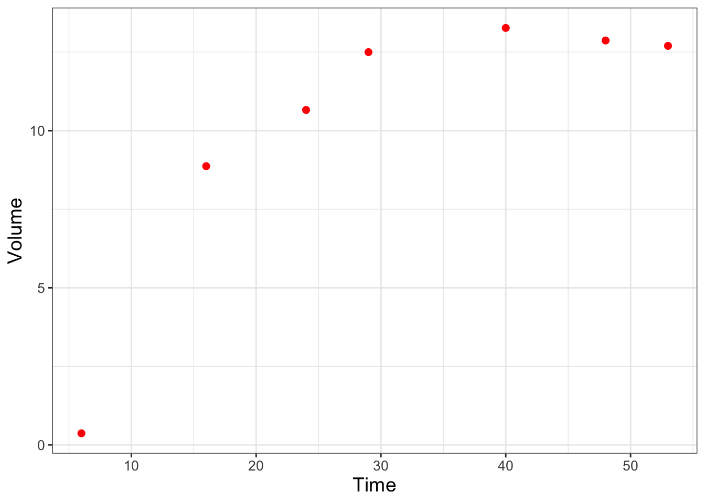
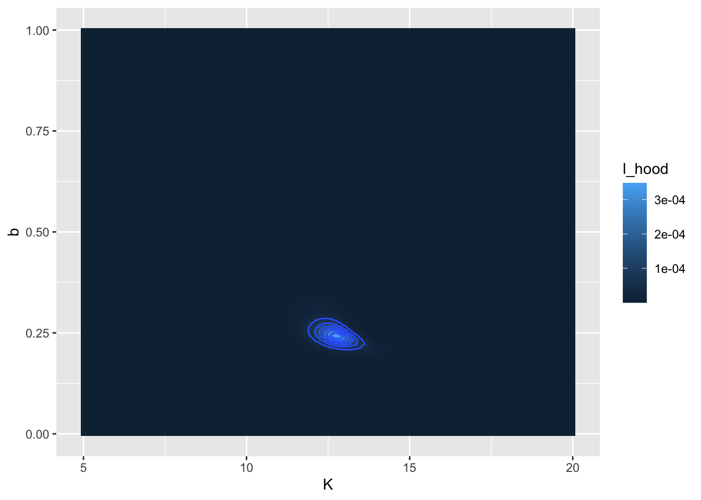
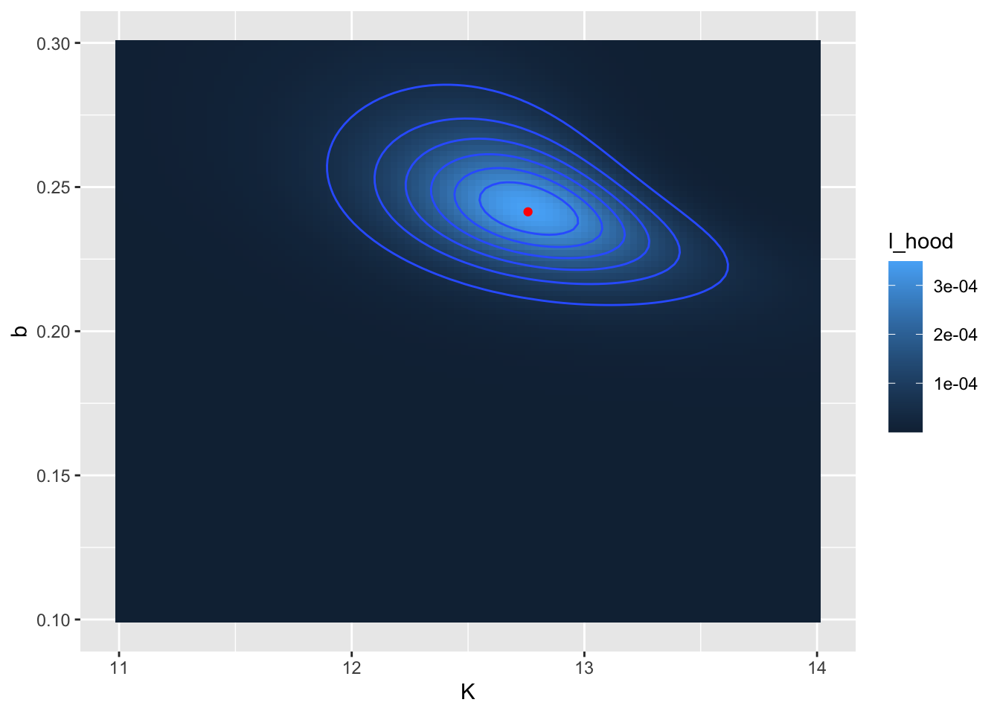
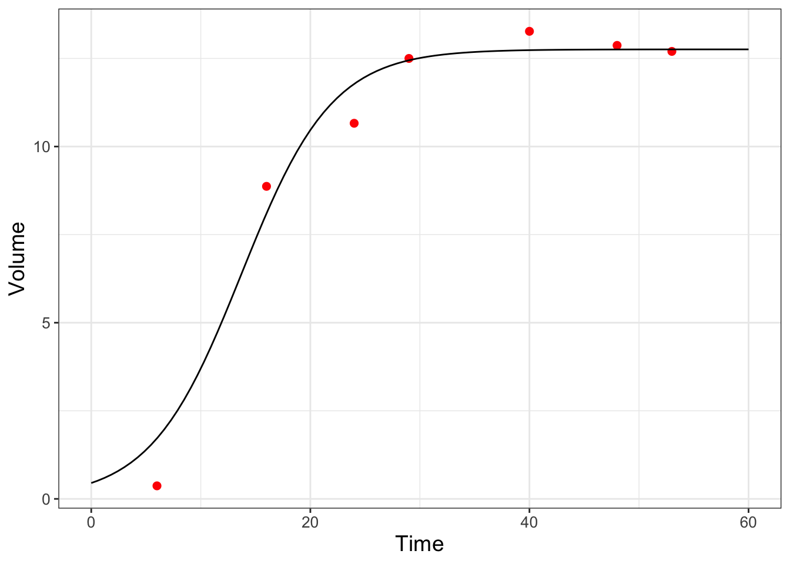

9 Probability and Likelihood Functions
In Chapter 8 we began to the process of parameter estimation. We revisit parameter estimation here by applying likelihood functions, which is a topic from probability and statistics. Probability is the association of a set of observable events to a quantitative scale between 0 and 1. Informally, a value of zero means that event is not possible; 1 means that it definitely can happen.1 We will only consider continuous events with the range of parameter estimation problems examined here.
This chapter will introduce likelihood functions but also discuss some interesting visualization techniques of multivariable functions and contour plots. As with Chapter 8 we are starting to build out some R skills and techniques that you can apply in other contexts. Let’s get started!
Note
This chapter uses following libraries: ggplot2, and tibble (all part of the tidyverse) and demodelr. See Section 2.3 on how to install packages. Prior to running any code in this section, include library(tidyverse) and library(demodelr).
9.1 Linear regression on a small dataset
Table 9.1 displays a dataset with a limited number of points where we wish to fit the function \(y=bx\):
| x | 1 | 2 | 4 | 4 |
|---|---|---|---|---|
| y | 3 | 5 | 4 | 10 |
For this example we are forcing the intercept term to equal zero - for most cases you will just fit the linear equation (see Exercise 9.6 where you will consider the intercept \(a\)). Figure 9.1 displays a quick scatterplot of these data:
The goal here is to work to determine the value of \(b\) that is most likely - or consistent - with the data. However, before we tackle this further we need to understand how to quantify most likely in a mathematical sense. In order to do this, we need to take a quick excursion into continuous probability distributions.
9.2 Continuous probability density functions
Consider Figure 9.2, which may be familiar to you as the normal distribution or the bell curve:

We tend to think of the plot and the associated function \(f(x)\) as something with input and output (such as \(f(0)=\) 0.3989). However because it is a probability density function, the area between two points yields the probability of an event to fall within two values as shown in Figure 9.2.
In this case, the numerical value of the shaded area would represent the probability that our measurement is in the interval \(-1 \leq x \leq 1\). The value of the area, or the probability, is 0.68269. Perhaps when you studied calculus the area was expressed as a definite integral: \(\displaystyle \int_{-1}^{1} f(x) \; dx=\) 0.68269, where \(f(x)\) is the formula for the probability density function for the normal distribution. Here, the formula for the normal distribution \(f(x)\) is given by Equation 9.1, where \(\mu\) is the mean and \(\sigma\) is the standard deviation.2
\[ f(x)=\frac{1}{\sqrt{2 \pi} \sigma } e^{-(x-\mu)^{2}/(2 \sigma^{2})} \tag{9.1}\]
With this intuition we can summarize key facts about probability density functions:
- \(f(x) \geq 0\) (this means that probability density functions are positive values)
- Area integrates to one (in probability, this means we have accounted for all of our outcomes)
9.3 Connecting probabilities to linear regression
Now that we have made that small excursion into probability, let’s return to the parameter estimation problem. Another way to phrase this problem is to examine the probability distribution of the model-data residual for each measurement \(\epsilon_{i}\) (Equation 9.2):
\[ \epsilon_{i} = y_{i} - f(x_{i},\vec{\alpha} ). \tag{9.2}\]
The approach with likelihood functions assumes a particular probability distribution on each residual. One common assumption is that the model-data residual is normally distributed. In most applications the mean of this distribution is zero (\(\mu=0\)) and the standard deviation \(\sigma\) (which could be specified as measurement error, etc.). We formalize this assumption with a likelihood function \(L\) in Equation 9.3.
\[ L(\epsilon_{i}) = \frac{1}{\sqrt{2 \pi} \sigma} e^{-\epsilon_{i}^{2} / 2 \sigma^{2} } \tag{9.3}\]
To extend this further across all measurements, we use the idea of independent, identically distributed measurements so the joint likelihood of all the residuals (each \(\epsilon_{i}\)) is the product of the individual likelihoods (Equation 9.4. The assumption of independent, identically distributed is a common one. As a note of caution you should always evaluate if this is a valid assumption for more advanced applications.
\[ L(\vec{\epsilon}) = \prod_{i=1}^{N} \frac{1}{\sqrt{2 \pi} \sigma} e^{-\epsilon_{i}^{2} / 2 \sigma^{2} } \tag{9.4}\]
We are making progress here; however to fully characterize the solution we need to specify the parameters \(\vec{\alpha}\). A simple redefining of the likelihood function where we specify the measurements (\(x\) and \(y\)) and parameters (\(\vec{\alpha}\)) is all we need (Equation 9.5).
\[ L(\vec{\alpha} | \vec{x},\vec{y} )= \prod_{i=1}^{N} \frac{1}{\sqrt{2 \pi} \sigma} \exp(-(y_{i} - f(x_{i},\vec{\alpha} ))^{2} / 2 \sigma^{2} ) \tag{9.5}\]
Now with Equation 9.5 we have a function where the best parameter estimate is the one that optimizes the likelihood.
Returning to our original linear regression problem (Table 9.1 and Figure 9.1), we want to determine the \(b\) for the function \(y=bx\). Equation 9.6 then characterizes the likelihood of \(b\), given the data \(\vec{x}\) and \(\vec{y}\):
\[ L(b | \vec{x},\vec{y} ) = \left( \frac{1}{\sqrt{2 \pi} \sigma}\right)^{4} e^{-\frac{(3-b)^{2}}{2\sigma^{2}}} \cdot e^{-\frac{(5-2b)^{2}}{2\sigma^{2}}} \cdot e^{-\frac{(4-4b)^{2}}{2\sigma^{2}}} \cdot e^{-\frac{(10-4b)^{2}}{2\sigma^{2}}} \tag{9.6}\]
For the purposes of our argument here, we will assume \(\sigma=1\). Figure 9.3 shows a plot of the likelihood function \(L(b | \vec{x},\vec{y} )\).

Note that in Figure 9.3 the values of \(L(b | \vec{x},\vec{y} )\) on the vertical axis are really small. (This typically may be the case; see Exercise @ref(exr:show-small-likely).) An alternative to the small numbers in \(L(b)\) is to use the log-likelihood (Equation 9.7):
\[ \begin{split} \ln(L(\vec{\alpha} | \vec{x},\vec{y} )) &= N \ln \left( \frac{1}{\sqrt{2 \pi} \sigma} \right) - \sum_{i=1}^{N} \frac{ (y_{i} - f(x_{i},\vec{\alpha} )^{2}}{ 2 \sigma^{2}} \\ & = - \frac{N}{2} \ln (2) - \frac{N}{2} \ln(\pi) - N \ln( \sigma) - \sum_{i=1}^{N} \frac{ (y_{i} - f(x_{i},\vec{\alpha} )^{2}}{ 2 \sigma^{2}} \end{split} \tag{9.7}\]
In Exercise 9.5) you will be working on how to transform the likelihood function \(L(b)\) to the log-likelihood \(\ln(L(b))\) and showing that Equation 9.6 is maximized at \(b=1.865\). The data with the fitted line is shown in Figure 9.4.

9.4 Visualizing likelihood surfaces
Next we are going to examine a second example from Gause (1932) which modeled the growing of yeast in solution. This classic paper examines the biological principal of competitive exclusion, how one species can out-compete another one for resources. Some of the data from Gause (1932) is encoded in the data frame yeast in the demodelr package. For this example we are going to examine a model for one species growing without competition. Figure 9.5 shows a scatterplot of the yeast data.
### Make a quick ggplot of the data
ggplot() +
geom_point(
data = yeast,
aes(x = time, y = volume),
color = "red",
size = 2
) +
labs(x = "Time", y = "Volume")
We are going to assume the population of yeast (represented with the measurement of volume) over time changes according to the differential equation \(\displaystyle \frac{dy}{dt} = -by \frac{(K-y)}{K}\), where \(y\) is the population of the yeast, and \(b\) represents the growth rate, and \(K\) is the carrying capacity of the population.
Equation 9.8 shows the solution to this differential equation, where the additional parameter \(a\) can be found through application of the initial condition \(y_{0}\).
\[ y = \frac{K}{1+e^{a-bt}} \tag{9.8}\]
In Gause (1932) the value of \(a\) was determined by solving the initial value problem \(y(0)=0.45\). In Exercise @ref(exr:solve-gause) you will show that \(\displaystyle a = \ln \left( \frac{K}{0.45} - 1 \right)\). Equation 9.8 then has two parameters: \(K\) and \(b\). Here we are going to explore the likelihood function to try to determine the best set of values for the two parameters \(K\) and \(b\) using a function in the demodelr package called compute_likelihood. Inputs to the compute_likelihood function are the following:
- A function \(y=f(x,\vec{\alpha})\)
- A dataset \((\vec{x},\vec{y})\)
- Ranges of your parameters \(\vec{\alpha}\).
The compute_likelihood function also has an optional input logLikely that allows you to specify if you want to compute the likelihood or the log-likelihood. The default is that logLikely is FALSE, meaning that the normal likelihoods are plotted.
First we will define the equation used to compute our model in the likelihood. As with the functions euler or systems in Chapter 4 we need to define this function:
library(demodelr)
# Define the solution to the differential equation with
# parameters K and bGause model equation
gause_model <- volume ~ K / (1 + exp(log(K / 0.45 - 1) - b * time))
# Identify the ranges of the parameters that we wish to investigate
kParam <- seq(5, 20, length.out = 100)
bParam <- seq(0, 1, length.out = 100)
# Allow for all the possible combinations of parameters
gause_parameters <- expand.grid(K = kParam, b = bParam)
# Now compute the likelihood
gause_likelihood <- compute_likelihood(
model = gause_model,
data = yeast,
parameters = gause_parameters,
logLikely = FALSE
)Ok, let’s break this code down step by step:
- The line
gause_model <- volume ~ K/(1+exp(log(k/0.45-1)-b*time))identifies the formula that relates the variablestimetovolumein the datasetyeast. - We define the ranges (minimum and maximum values) for our parameters by defining a sequence. Because we want to look at all possible combinations of these parameters we use the command
expand.grid. - The input
logLikely = FALSEtocompute_likelihoodreports back likelihood values.
Some care is needed in defining the number of points (length.out = 100) in the sequence that we want to evaluate - we will have \(100^{2}\) different combinations of \(K\) and \(b\) on our grid, which does take time to evaluate.
The output to compute_likelihood is a list, which is a flexible data structure in R. You can think of this as a collection of items - which could be data frames of different sizes. In this case, what gets returned are two data frames: likelihood, which is a data frame of likelihood values for each of the parameters and opt_value, which reports back the values of the parameters that optimize the likelihood function. Note that the optimum value is an approximation, as it is just the optimum from the input values of \(K\) and \(b\) provided on our grid. Let’s take a look at the reported optimum values, which we can do with the syntax LIST_NAME$VARIABLE_NAME, where the dollar sign ($) helps identify which variable from the list you are investigating.
gause_likelihood$opt_value# A tibble: 1 × 4
K b l_hood log_lik
<dbl> <dbl> <dbl> <lgl>
1 12.7 0.242 0.000348 FALSE It is also important to visualize this likelihood function. For this dataset we have the two parameters \(K\) and \(b\), so the likelihood function will be a likelihood surface, rather than a two-dimensional plot. To visualize this in R we can use a contour diagram. Figure 9.6 displays this countour plot.
# Define the likelihood values
my_likelihood <- gause_likelihood$likelihood
# Make a contour plot
ggplot(data = my_likelihood) +
geom_tile(aes(x = K, y = b, fill = l_hood)) +
stat_contour(aes(x = K, y = b, z = l_hood))
yeast dataset.
Similar to before, let’s take this step by step:
- The command
my_likelihoodjust puts the likelihood values in a data frame. - The
ggplotcommand is similar to that used before. - We use
geom_tileto visualize the likelihood surface. There are three required inputs from themy_likelihooddata frame: thexandyaxis data values and thefillvalue, which represents the height of the likelihood function. - The command
stat_contourdraws the contour lines, or places where the likelihood function has the same value. Notice how we usedz = l_hoodrather thanfillhere. This function helps “smooth” out any jaggedness in the contours.
In Figure 9.6 there appears to be a large region where the likelihood has the same value. (Admittedly I chose some broad parameter ranges for \(K\) and \(b\)). We can refine that by producing a second contour plot that focuses in on parameters closer to the calculated optimum value at \(K=13\) and \(b=0.07\) (Figure 9.7):
# A tibble: 1 × 4
K b l_hood log_lik
<dbl> <dbl> <dbl> <lgl>
1 12.8 0.241 0.000349 FALSE 
yeast dataset. The computed location of the optimum value is shown as a red point.
The reported values for \(K\) (12.8) and \(b\) (0.241) may be close to what was reported from Figure 9.6. Notice that in Figure 9.7 I also added in the location of the optimum point with geom_point().
As a final step, once you have settled on the value that optimizes the likelihood function, is to compare the optimized parameters against the data (Figure 9.8):
# Define the parameters and the times to evaluate:
my_params <- gause_likelihood_rev$opt_value
time <- seq(0, 60, length.out = 100)
# Get the right hand side of your equations
new_eq <- gause_model |>
formula.tools::rhs()
# This collects the parameters and data into a list
in_list <- c(my_params, time) |> as.list()
# The eval command evaluates your model
out_model <- eval(new_eq, envir = in_list)
# Now collect everything into a data frame:
my_prediction <- tibble(time = time, volume = out_model)
ggplot() +
geom_point(
data = yeast,
aes(x = time, y = volume),
color = "red",
size = 2
) +
geom_line(
data = my_prediction,
aes(x = time, y = volume)
) +
labs(x = "Time", y = "Volume")
yeast dataset from maximum likelihood estimation.
All right, this code block has some new commands and techniques that need explaining. Once we have the parameter estimates we need to compute the modeled values.
- First we define the
paramsand thetimewe wish to evaluate with our model. - We need to evaluate the right hand side of \(\displaystyle y = \frac{K}{1+e^{a+bt}}\), so the definition of
new_eqhelps to do that, using the packageformula.tools. - The
|>is thetidyversepipe. This is a very useful command to help make code more readable! in_list <- c(params,my_time) |> as.list()collects the parameters and input times in one list to evaluate the model without_model <- eval(new_eq,envir=in_list)- We make a data frame called
my_predictionso we can then plot.
And the rest of the plotting commands you should be used to. This activity focused on the likelihood function - Exercise @ref(exr:log-likelihood-yeast) has you repeat this analysis with the log-likelihood function.
9.5 Looking back and forward
This chapter covered a lot of ground - from probability and likelihood functions to computing and visualizing these. A good strategy for a likelihood function is to visualize the function and then explore to find values that optimize the likelihood or log-likelihood function. This approach is one example of successive approximations or using an iterative method to determine a solution. While this chapter focused on optimizing a likelihood function with one or two parameters, the successive approximation method does generalize to more parameters. However searching for parameters becomes tricky (read: tedious and slow) in high-dimensional spaces. In later chapters we will explore numerical methods to accelerate convergence to an optimum value.
9.6 Exercises
Exercise 9.1 Algebraically solve the equation \(\displaystyle 0.45 = \frac{K}{1+e^{a}}\) for \(a\).
Exercise 9.2 Compute the values of \(L(b|\vec{x},\vec{y})\) and \(\ln(L(b|\vec{x},\vec{y}))\) for each of the data points in Equation 9.6 when \(b=1.865\) and \(\sigma=1\). (This means that these 4 values would be multiplied or added when you compute the full likelihood function.) Explain if the likelihood or log-likelihood would be easier to calculate in instances when the number of observations is large.
Exercise 9.3 Visualize the likelihood function for the yeast dataset, but in this case report out and visualize the log-likelihood. (This means that you are setting the option logLikely = TRUE in the compute_likelihood function.) Compare the log-likelihood surface to Figure 9.7.
Exercise 9.4 When we generated our plot of the likelihood function in Figure 9.3 we assumed that \(\sigma=1\) in Equation (9.6). For this exercise you will explore what happens in Equation (9.6) as \(\sigma\) increases or decreases.
- Use desmos or
Rto generate a plot of Equation 9.6. What happens to the shape of the likelihood function as \(\sigma\) increases? - How does the estimate of \(b\) change as \(\sigma\) changes?
- The spread of the distribution (in terms of it being more peaked or less peaked) is a measure of uncertainty of a parameter estimate. How does the resulting parameter uncertainty change as \(\sigma\) changes?
Exercise 9.5 Using Equation 9.6 with \(\sigma = 1\):
Apply the natural logarithm to both sides of this expression. Using properties of logarithms, show that the log-likelihood function is \(\displaystyle \ln(L(b)) =-2 \ln(2) - 2 \ln (\pi) -\frac{(3-b)^{2}}{2}-\frac{(5-2b)^{2}}{2}-\frac{(4-4b)^{2}}{2}-\frac{(10-4b)^{2}}{2}\).
Make a plot of the log-likelihood function (in desmos or
R).At what values of \(b\) Where is this function optimized? Does your graph indicate that it is a maximum or a minimum value?
Compare this likelihood estimate for \(b\) to what was found in Figure 9.3.
Exercise 9.6 Consider the linear model \(y=a+bx\) for the following dataset:
| x | y |
|---|---|
| 1 | 3 |
| 2 | 5 |
| 4 | 4 |
| 4 | 10 |
- With the function
compute_likelihood, generate a contour plot of both the likelihood and log-likelihood functions. You may assume \(0 \leq a \leq 5\) and \(0 \leq b \leq 5\). - Make a scatterplot of these data with the equation \(y=a+bx\) with your maximum likelihood parameter estimates.
- Earlier when we fit \(y=bx\) we found \(b=1.865\). How does adding \(a\) as a model parameter affect your estimate of \(b\)?
Exercise 9.7 For the function \(\displaystyle P(t)=\frac{K}{1+e^{a+bt}}\), with \(P(0)=P_{0}\), determine an expression for the parameter \(a\) in terms of \(K\), \(b\), and \(P_{0}\).
Exercise 9.8 The values returned by the maximum likelihood estimate for Equation 9.8 were a little different from those reported in Gause (1932):
| Parameter | Maximum Likelihood Estimate | Gause (1932) |
|---|---|---|
| \(K\) | 12.7 | 13.0 |
| \(b\) | 0.24242 | 0.21827 |
Using the yeast dataset, plot the function \(\displaystyle y = \frac{K}{1+e^{a-bt}}\) (setting \(\displaystyle a = \ln \left( \frac{K}{0.45} - 1 \right)\)) using both sets of parameters. Which approach (the Maximum Likelihood estimate or Gause (1932)) does a better job representing the data?
Exercise 9.9 An equation that relates a consumer’s nutrient content (denoted as \(y\)) to the nutrient content of food (denoted as \(x\)) is given by: \(\displaystyle y = c x^{1/\theta}\), where \(\theta \geq 1\) and \(c>0\) are both constants.
- Use the dataset
phosphorousto make a scatterplot with the variablealgaeon the horizontal axis,daphniaon the vertical axis. - Generate a contour plot for the likelihood function for these data. You may assume \(0 \leq c \leq 5\) and \(1 \leq \theta \leq 20\). What are the values of \(c\) and \(\theta\) that optimize the likelihood? Hint: for the dataset
phosphorousbe sure to use the variables \(x=\)algaeand \(y=\)daphnia. - Add the fitted curve to your scatterplot and evaluate your fitted results.
Exercise 9.10 A dog’s weight \(W\) (pounds) changes over \(D\) days according to the following function:
\[ W =f(D,p_{1},p_{2})= \frac{p_{1}}{1+e^{2.462-p_{2}D}}, \]
where \(p_{1}\) and \(p_{2}\) are parameters.
- This function can be used to describe the data
wilson. Make a scatterplot with thewilsondata. What is the long term weight of the dog? - Generate a contour plot for the likelihood function for these data. What are the values of \(p_{1}\) and \(p_{2}\) that optimize the likelihood? You may assume that \(p_{1}\) and \(p_{2}\) are both positive.
- With your values of \(p_{1}\) and \(p_{2}\) add the function \(W\) to your scatterplot and compare the fitted curve to the data.
Devore, Jay L., Kenneth N. Berk, and Matthew A. Carlton. 2021. Modern Mathematical Statistics with Applications. 3rd ed. Springer Texts in Statistics. Cham, Switzerland: Springer International Publishing. https://doi.org/10.1007/978-3-030-55156-8.
Gause, G. F. 1932. “Experimental Studies on the Struggle for Existence: I. Mixed Population of Two Species of Yeast.” Journal of Experimental Biology 9 (4): 389–402.
See Devore, Berk, and Carlton (2021) for a more refined definition of probability.↩︎
Were you ever asked to find the antiderivative of \(\displaystyle \int e^{-x^{2}} \; dx\)? You may recall that there is easy antiderivative - and to find values of definite integrals you need to approximate numerically. Thankfully
Rdoes that work using sophisticated numerical integration techniques!↩︎